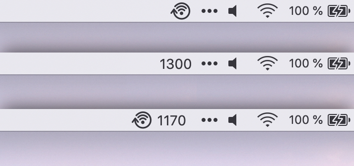
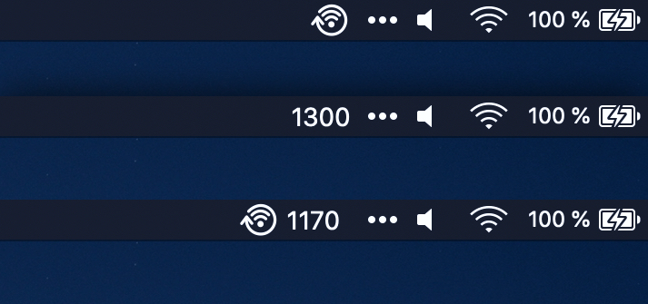

Lives in your menu bar.
yFi sneaks into your menu bar quietly. You can choose to show the current TX Rate directly to see what's going on.



yFi sneaks into your menu bar quietly. You can choose to show the current TX Rate directly to see what's going on.
Clicking the icon shows the popover menu to allow easy
configuration.


Be notified, automatically reconnect, or ignore a drop in TX rate in really unstable environments.